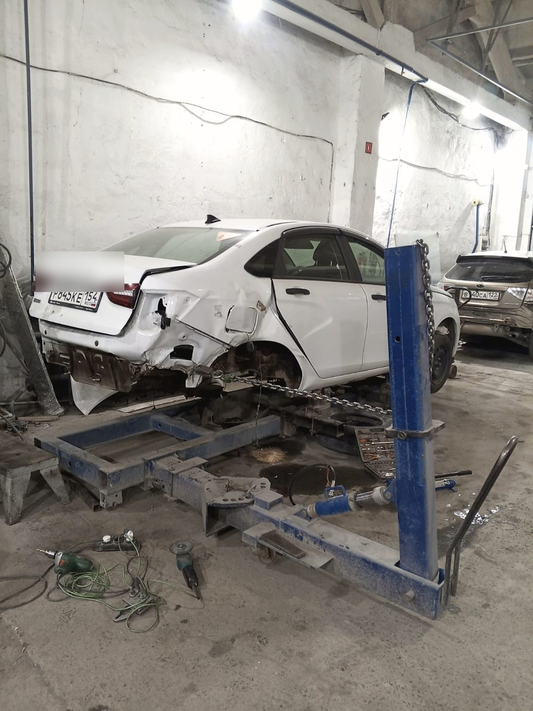
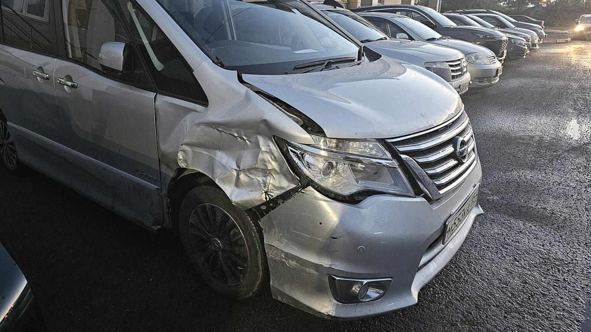
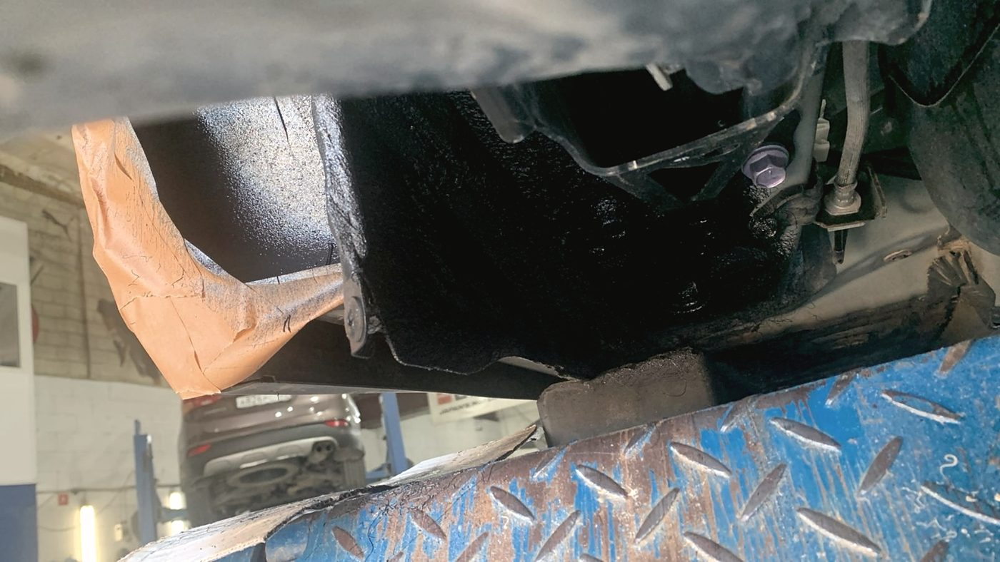
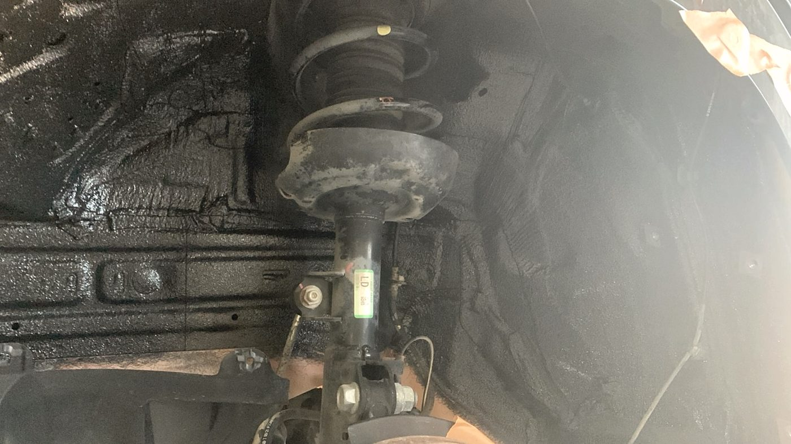
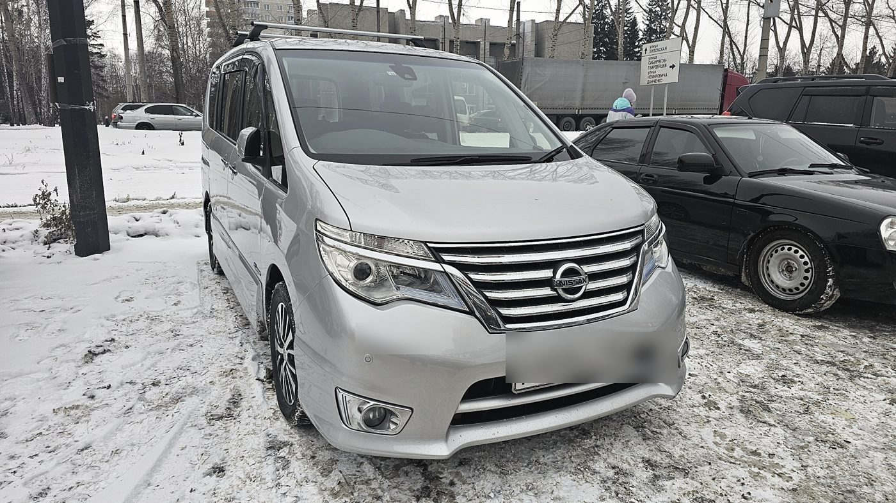
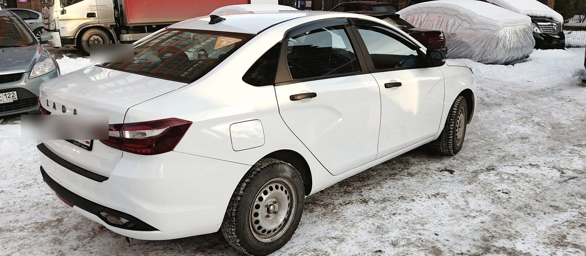

Центр кузовного ремонта · улица Мира, 58а · Кировский район
Кузовной ремонт, который сходится по зазорам
Зазор — это то, по чему кузовщика видно сразу. Деталь можно поставить
быстро, а можно поставить так, чтобы через год не пришлось объяснять, почему
капот стоит криво. Мы восстанавливаем геометрию на стапеле, красим в цвет
и собираем машину по месту — а не «примерно туда».
Ворота на Мира, 58а. Сюда заезжают и после лёгкой парковочной неприятности,
и после серьёзного ДТП, и просто на антикор перед зимой.
После аварии
Приезжайте сразу. Считать будем при вас
Самое неприятное после ДТП —
не сам ремонт, а неизвестность: сколько это будет стоить и когда машина вернётся.
Поэтому мы принимаем сразу, считаем быстро и держим связь всё время, пока машина у нас.
Так это описала Екатерина: «Приняли сразу после аварии, были постоянно на связи,
во всём помогали, быстро сделали расчёт».
Осмотр и предварительный расчёт
Смотрим машину и называем предварительную сумму — обычно в тот же день.
Скрытые повреждения, если они найдутся при разборе, обсуждаем отдельно.
Согласуем список работ до начала
В работу идёт только то, о чём мы договорились. Ничего «заодно» и «раз уж
всё равно разобрали» без вашего слова не появляется.
Геометрия, потом железо, потом покраска
Сначала стапель и правка, потом кузовные детали по зазорам, и только затем
покраска в цвет. Обратный порядок — это когда «покрашено красиво, но стоит косо».
Фотоотчёт по ходу и выдача
Присылаем снимки по этапам — вы видите машину, не приезжая. Стараемся отдать
в срок или раньше: так бывает чаще, чем наоборот, и мы этим дорожим.

Стапель. Без него «поставить деталь» и «восстановить кузов» —
это две разные работы.

Такую машину принимаем в тот же день — и в тот же день считаем.
Работы
Что делаем по кузову
Восстановление геометрии
Правка кузова на стапеле после серьёзных ударов. Замеры — до, во время
и после, а не «на глаз».
Покраска
Подбор и покраска в цвет, локальный ремонт, окраска отдельных элементов.
Попадание в цвет проверяем на выкрасе.
Ремонт вмятин
От парковочных вмятин до серьёзной деформации панелей. Где можно —
выправляем, а не меняем.
Сварка
Замена и восстановление силовых элементов, порогов, арок. Сварка
с антикоррозийной обработкой шва.
Полировка
Полировка кузова и фар. Фары часто полируем в подарок к кузовному ремонту —
это не акция, а привычка.
Автостекло и оптика
Установка и ремонт автостёкол, установка и ремонт автооптики.
Всё на одной площадке.
Антикоррозийная обработка
Полный антикор с фотоотчётом на каждом этапе. Обычно два дня —
и машина уходит в зиму спокойно.
Аэрография
Художественная роспись по кузову. Редкая позиция для сервиса —
но у нас она есть.
Грузовые
Кузовной ремонт грузовых автомобилей — берёмся и за то, что не влезает
в обычный бокс.

Антикор. По каждому этапу уходит снимок — вы видите, что покрыто
и чем, не залезая под машину.

Арки и швы — там, где ржавчина начинается раньше всего.
Честно
Про ржавчину после ремонта
У нас есть отзыв, где человек через полтора года
после ремонта нашёл коррозию на пороге и арке. Мы посмотрели его фотографии и ответили
подробно — и повторим здесь, потому что это касается не только его.
Коррозия на порогах и внизу арки вызвана механическими повреждениями:
там множество сколов, и в тех местах, где скол доходит до металла, начинается процесс
коррозии — металл ржавеет и поднимает краску.
Что это значит для вас
Пороги и низ арок принимают на себя весь гравий с дороги. Свежая краска
не делает металл толще: скол до металла зимой — это очаг ржавчины
независимо от того, кто и как красил. Поэтому антикор и своевременная
подкраска сколов — не допродажа, а обязательная часть ухода.
Что делаем мы
Показываем сколы при приёмке и на выдаче, обрабатываем швы и скрытые
полости после сварки, а если вы вернулись с вопросом — смотрим машину
и объясняем причину по фотографиям, а не отмахиваемся. Приезжайте сразу,
как заметили: на этой стадии всё решается локально и недорого.
Отзывы · 4,9 из 5 по 176 оценкам в 2ГИС
«Бампер покрасили идеально, а все кузовные встали по зазорам»
Илья Филиппов · отзыв в 2ГИС · 22 ноября 2025
Очень порадовало, что здесь с тебя не пытаются взять лишнего: весь список работы
был согласован чётко по делу, ещё и фары в подарок отполировали. Админсостав приятен
в общении, а мастеру Дмитрию отдельный респект.
Илья Филиппов · 22 ноября 2025
Приняли сразу после аварии, были постоянно на связи, во всём помогали, быстро
сделали расчёт. Однозначно рекомендую, если нужен кузовной ремонт. Хорошее отношение
к клиенту это сейчас дорогого стоит.
Екатерина Ш. · 2 сентября 2025
Обращался для установки антикора. Сделали за 2 дня. На каждом этапе делали
фотоотчёт, финальный результат также порадовал.
Отзыв в 2ГИС · 19 сентября 2025
Спасибо огромное за ваш труд и внимание к деталям. Сделали ремонт просто идеально,
вернули авто раньше заявленного срока. Адекватные цены, клиентоориентированность
200 %.
Татьяна Горбунова · 13 июня 2026

Та же машина после ремонта. Зазоры, кромки, стыки — на них
и смотрят в первую очередь.

Работаем и с иномарками, и с отечественными машинами,
и с грузовыми.
Карта загружается с сервера «Яндекса» и устанавливает свои cookie.
Записаться на расчёт
Мы используем файлы cookie: технически необходимые для работы страницы и те, что
устанавливает виджет «Яндекс.Карт». Аналитику и рекламные счётчики без вашего согласия
не подключаем. Подробности — в Политике обработки персональных данных.